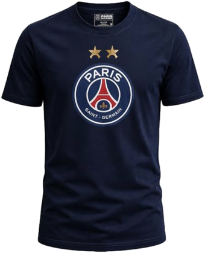

Tu viens d'ouvrir l'ancienne icône YouProno. Pour avoir la nouvelle, supprime-la, ouvre thegoldenfan.fr dans ton navigateur, puis remets le jeu sur ton écran d'accueil.
Merci et désolé de t'imposer cette manipulation.
Fin des prédictions dans :
Passe en mode tournoi et découvre une nouvelle façon de jouer en défiant tes amis sur WhatsApp, sur X ou parmi les membres du jeu.
DEVINE LES 11 TITULAIRES
← Retour à l'accueilPOSSESSION
← RetourTIRS
← RetourFAUTES
← RetourCENTRES
← RetourSCORE
← RetourRÉCAPITULATIF
← RetourTu pourras la modifier tant que tu veux jusqu'à la clôture des prédictions.
TOURNOIS
Cinq matchs, un vainqueur. On s'inscrit jusqu'à la clôture des prédictions du prochain match — ensuite, le tournoi est fermé. Onze joueurs au maximum, comme sur un terrain de foot : plus vous êtes nombreux, plus les trophées sont précieux.
J'ai un code d'invitationINSCRIRE DES JOUEURS
← Retour au tournoiLe classement général, à ta place. Choisis qui tu veux voir à ta table : le joueur est inscrit aussitôt et l'apprendra à sa prochaine visite.
CRÉER UN TOURNOI
REJOINDRE UN TOURNOI
AnnulerTOURNOI
← Retour aux tournois Renommer le tournoià gagner

TON ADRESSE E-MAIL
Merci d'entrer ton email afin de pouvoir te connecter si tu as oublié ton pseudo et/ou ton mot de passe.
LES KOPS
Les kops sont des ligues privées avec un nombre de membres illimité et qui ont leur propre classement interne.
Aucun ne te ressemble ? Ouvre le tien.
CRÉE TON KOP
KOP
Ce kop n'a pas encore de match noté.
LES PRÉDICTIONS DU TOURNOI
← Retour à l'accueilPrédiction enregistrée
Passe en mode tournoi et découvre une nouvelle façon de jouer en défiant tes amis sur WhatsApp, sur X ou parmi les membres du jeu.
TABLEAU DE BORD
Il faut avoir joué au moins 3 matchs pour que ta position au classement ne soit plus virtuelle. En cas de forfait, on t'attribue une note en dessous de la moyenne des participants.
CLASSEMENT
← RetourLe Coef Expert est la moyenne des résultats obtenus match après match.
Il faut avoir joué au moins 3 matchs pour que ta position au classement ne soit plus virtuelle. En cas de forfait, on t'attribue une note en dessous de la moyenne des participants.
CLASSEMENT DU MATCH
← Retour à mon résultatMES TROPHÉES
Finis haut dans les classements de tournoi pour remplir ta vitrine de trophées.
À chaque fin de mini-championnat, les mieux classés de chaque tournoi remportent un ballon. Il existe 5 niveaux de récompense selon le nombre de points obtenus. Plus vous êtes nombreux à jouer au sein d'un tournoi, plus vous marquez de points.
← Retour à l'accueilMES BADGES
Chaque coup d'éclat débloque un badge.
← Retour à l'accueilFAQ
← RetourTon défi est de deviner la composition et le déroulement du prochain match du PSG jusqu'à 2 heures avant le coup d'envoi - et cela lors de tous les matchs du PSG, quelle que soit la compétition officielle dans laquelle le club est engagé.
Les règles sont simples : tu dois répondre à 6 questions 2 heures avant coup d'envoi du prochain match du PSG. Il y a 6 questions que nous préférons appeler des prédictions.
1) Quelle sera la composition des 11 titulaires ?
2) Quelle sera la possession de balle du PSG ?
3) Combien de tirs vont être effectués par chacune des 2 équipes ?
4) Combien de centres vont être effectués par chacune des 2 équipes ?
5) Combien de fautes vont être effectuées par chacune des 2 équipes ?
6) Quel sera le score final de la rencontre ?
Oui sur ton profil, tu peux les modifier jusqu'à 2 heures avant le coup d'envoi du match. Une fois le compte à rebours terminé, toute modification devient impossible.
Parce qu'elles permettent de déterminer ton niveau d'expertise du PSG et du football en général.
Est-ce que l'entraîneur va faire tourner ? Est-ce que le match va être engagé ?
Y aura-t-il beaucoup d'occasions ?
Le jeu se déroulera-t-il dans l'axe du terrain ou sur les côtés ?
Et surtout, qui sera le vainqueur ?
Nous comparons tes prédictions avec les statistiques officielles du match à l'aide de formules plus ou moins complexes qui ont été testées et éprouvées depuis plusieurs mois.
Non. Il y a des prédictions plus importantes, plus elles révèlent ton expertise et ta connaissance de l'actualité du club, plus elles ont d'importance - dans l'ordre : la composition, le score, la possession, les tirs, les fautes et les centres.
Environ 15 minutes après la fin du match, le temps que les statistiques soient consolidées et comparées aux prédictions de tous les participants.
C'est la moyenne de tes résultats match après match, y compris tes mauvaises notes en cas de forfait. C'est lui qui détermine ta place au classement général et qui prouve ton expertise et ton assiduité sur toute une saison.
Non, mais tu ne pars pas indemne. On t'attribue une note en dessous de la moyenne des participants à ce match, et elle entre dans ton Coef Expert comme une vraie note.
C'est une note basse, mais jamais la pire : tu passes devant ceux qui ont joué et se sont trompés. Et elle s'adapte au match — un soir où tout le monde a vu juste, elle te coûte peu ; un soir où les écarts se creusent, elle te coûte cher.
Dans les compétitions de tournoi, en revanche, un forfait vaut toujours 0 point. C'est difficile à rattraper.
Bien sûr, tu es le bienvenu à tout moment du jeu. Tu pourras prouver ta valeur au classement de la note record dès les premiers matchs. Ta position au classement général reste virtuelle tant que tu n'as pas joué trois matchs — le temps que ta moyenne veuille dire quelque chose. Passé ce cap, ton pseudo s'affiche en doré et ta place est acquise, à toi de la tenir. N'oublie pas qu'il existe aussi une vraie compétition au sein des tournois qui permet de décrocher des trophées.
C'est le meilleur résultat obtenu sur un match depuis ton inscription au jeu. Un classement est même dédié à cette note et celui qui aura eu la meilleure note en fin de saison sera célébré.
Nous prenons en compte les résultats à la fin du temps réglementaire sans prendre en compte les prolongations et les tirs au but. Nous faisons ce choix pour que tout le monde soit sur un pied d'égalité.
Oui. Plus tu prends des risques en faisant ta compo, plus tu marques de points si ton joueur est aussi choisi par Enrique.
Un titulaire que presque personne n'avait vu peut rapporter jusqu'à un quart de plus qu'un titulaire évident. C'est pour ça qu'une note de composition peut dépasser 100.
The Golden Fan s'installe sans passer par un magasin d'applications. Le jeu devient une icône sur ton écran d'accueil, s'ouvre en plein écran, et tu n'as plus jamais d'adresse à taper.
Sur iPhone : touche le bouton Partager en bas de Safari, fais défiler jusqu'à « Sur l'écran d'accueil », puis Ajouter.
Sur Android : ouvre le menu de Chrome en haut à droite, puis « Ajouter à l'écran d'accueil ».
Tout est expliqué pas à pas dans le menu, à la ligne « Installer le jeu ».
Un tournoi réunit de 2 à 11 joueurs. Ici pas de moyenne : chacun cumule des points en fonction de sa note globale match après match pendant une période de 5 matchs. Plus vous êtes nombreux dans le tournoi, plus le ballon à décrocher est précieux : baudruche, cuir, bronze, argent, puis le ballon d'or.
Mentions légales
← RetourThe Golden Fan est édité par Antoine Mollard, à titre non professionnel.
Contact : contact@thegoldenfan.fr
Conformément à l'article 6 III-2 de la loi du 21 juin 2004 pour la confiance dans l'économie numérique, l'éditeur, personne physique éditant ce site à titre non professionnel, a communiqué son identité complète à son hébergeur, qui la tient à disposition des autorités judiciaires.
Le site et son serveur sont hébergés par Render Services, Inc., 525 Brannan Street, Suite 300, San Francisco, CA 94107, États-Unis. render.com
Les noms de domaine thegoldenfan.fr, thegoldenfan.com et youprono.fr sont enregistrés chez OVH SAS, 2 rue Kellermann, 59100 Roubaix, France. ovhcloud.com
The Golden Fan est un jeu gratuit. Il n'y a ni mise, ni gain, ni publicité. Les classements, les badges et les trophées n'ont aucune valeur marchande.
Les textes, le logo, les pictogrammes et l'ensemble des éléments du jeu appartiennent à son éditeur. Toute reproduction sans autorisation est interdite.
Le Paris Saint-Germain n'est pas associé à The Golden Fan. Les noms des clubs et des joueurs sont cités à titre d'information sportive.
Politique de confidentialité
Ton pseudo, ton mot de passe et ton adresse e-mail, donnés à l'inscription. Ton mot de passe est chiffré : personne ne peut le lire, pas même l'éditeur.
Tes prédictions et les notes qu'elles obtiennent, qui sont la matière même du jeu.
Rien d'autre. Le jeu ne pose aucun traceur publicitaire et ne mesure pas ton audience.
À te renvoyer ton pseudo et un lien de réinitialisation si tu perds ton mot de passe.
À te rappeler qu'un match du PSG approche, et à t'envoyer ta note le lendemain. Chaque message porte un lien pour ne plus rien recevoir, en un clic.
Ton adresse n'est ni vendue, ni échangée, ni communiquée à qui que ce soit.
Les autres joueurs voient ton pseudo, tes prédictions une fois la clôture passée, et tes notes. C'est le principe du jeu.
Ton adresse e-mail n'est jamais visible par les autres joueurs.
Dans une base de données hébergée par Render, aux États-Unis. Elles y sont conservées tant que ton compte existe.
L'envoi des courriels passe par Brevo, société française, qui n'utilise ton adresse que pour expédier les messages du jeu.
Écris « je souhaite supprimer mon compte » à contact@thegoldenfan.fr, depuis l'adresse de ton compte. Ton compte et tes prédictions sont effacés.
Tu peux aussi demander à voir les données que le jeu détient sur toi, ou à les faire corriger, à la même adresse.